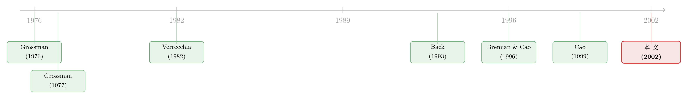

同一张期权，有人因它更勤于打探，有人因它更愿意躺平
本文读的是 Massa (2002, Review of Financial Studies)：在一个内生信息获取的连续时间模型里，引入一张写在股票上的衍生品，到底是抬高还是压低了人们「花钱去打探消息」的积极性，并没有唯一答案——它取决于市场原本的「信息地形」。当信息原本分布得比较均匀、人们买信息是为了抢一个优势时，衍生品往往让人更想偷懒；而当信息高度集中、落后者买信息只是为了少吃点亏时，衍生品反而会逼他们更勤于打探。前者对应文献中少数稳健的实证规律（价格、风险溢价、波动率），后者对应那些「换一个市场就换一个结论」的混乱发现（成交量、量价相关性、市场效率）。
1 一个让标准模型「头疼」的事实
先从一个让金融学家头疼了很多年的经验事实说起。
同样一类合约——比如一份期货或一份期权——写在同样一类资产上——比如股票或债券——把它「发明」出来、推到市场上之后，会发生什么？按理说，物理上同一种创新，效果应该差不多。可现实偏偏不是这样。把它放到场外市场（over-the-counter）还是放到受监管的交易所，早一点推出还是晚一点推出，结论可以南辕北辙。
更要命的是，这些结论里有一部分是「稳的」，有一部分是「乱的」。文中说得很直白：实证研究大体上都发现，衍生品的引入会降低风险溢价、降低波动率、抬高标的资产价格——这几条相当稳健。可一旦你去看成交量、量价相关性、以及市场效率（degree of market efficiency），结论就开始打架了 [Edwards (1988a,b), Harris (1989), Damodaran (1990), Damodaran and Lim (1991)]：标的波动率下降的同时，有的市场成交放大，有的市场成交反而萎缩；衍生品有时让收益更可预测，有时又让市场更有效。
这就是全文要解释的那个「张力」：为什么有些效应跨市场稳健，有些效应却随市场而变？ Massa 的答案不是「数据噪声太大」，而是——这两组效应背后是两种不同的机制，而把它们分开的那把尺子，叫「市场的信息结构」。
2 两位前辈，两个相反的结论
要看清这篇论文站在哪儿，得先看清它要调和的两个人。
首先是 Grossman (1977)。在一个标准的两期模型里，他证明：引入一份期货，总是会降低人们购买信息的积极性。直觉很漂亮——新资产一旦开始交易，它的价格本身就泄露了信息，于是你不必再花钱去观察外部信号，「白看」期货价格就行了。这是经典的信息搭便车（free-riding），也是 Grossman-Stiglitz (1980) 那条「信息有效市场不可能存在」的同一脉络。（关于这种「越多人知情、价格越透明，单个人越不想花钱打探」的张力，可参见《当「噪声」开始说话：动态市场里，越多人知情反而越想知情》。）
接着，一个自然的问题是：那期权呢？Cao (1999) 偏偏得到了相反的结论。在他的设定里，引入一份期权型合约总是会抬高购买信息的积极性。逻辑是这样的：当人们买了更多信息，资产的风险下降、价格上升，于是财富和效用都上升了——既然多打探有这等好处，大家自然更愿意打探。
于是我们手里有了两块互相矛盾的拼图：一个说「期货让人偷懒」，一个说「期权让人勤快」。是合约类型（期货 vs 期权）造成的差别吗？Massa 的回答是：不全是。真正被两人共同忽略的，是另一样东西。
3 被忽略的那一步：人为什么买信息？
然后，真正关键的一步在于：Grossman 和 Cao 的模型里，买信息只有一个动机——为了取得相对别人的信息优势。他们都没有考虑另一种截然不同的动机：当市场上信息已经高度集中在少数人手里，落后的那群人买信息，不是为了抢到优势，而仅仅是为了把自己的劣势缩小一点。
这两种动机听上去只差一层意思，结果却天差地别。Massa 用两个「情景」来刻画它们：
- 情景一（低信息不对称）：市场上有两类人，初始都是「不知情」的，然后允许其中一类去购买一组信号。此时谁先买到信息，谁就建立起一个信息优势。这对应 Grossman / Cao 的世界。
- 情景二（高信息不对称）：市场上有一类是完全知情者（fully informed），他们一开始就知道一切；另一类只能从价格和股利里过滤信息，但可以花钱买信号去减少自己相对知情者的劣势。
把这两种情景并排放，整篇论文的核心命题就浮出来了：同样一笔信息量的变化，作用在价格上的方向，取决于这笔信息是用来「拉大」还是「填平」一道信息鸿沟。 衍生品之所以一会儿让人更勤、一会儿让人更懒，正是因为它改变的，是这道鸿沟两侧的人各自的算盘。
于是 Grossman 和 Cao 的结论都成了 Massa 框架里的特例（subcase）——他们各自只站在了「信息地形」的一种地貌上。
4 模型：把「买信息」放进一个会呼吸的经济里
这是一篇模型论文，核心贡献是在一个连续时间的一般均衡里，第一次同时容纳了「一只股票 + 一张衍生品」和「内生、且随时间不断更新的信息购买」。我们把它的骨架一步步拆开。
4.1 经济与资产
延续 Wang (1993) 的交换经济（exchange economy）设定：一个外生的生产过程产出实际股利流 D，股票 S 是对这套技术的索取权。股利由一个系统性的生产率过程 Π 和一个特质冲击共同驱动：
$$ dD = (\alpha\Pi - kD)\,dt + b_{D}\,dz $$
其中状态变量 Π 服从一个均值回复的 Ornstein–Uhlenbeck 过程：
$$ d\Pi = a_{\Pi}(\bar{\Pi} - \Pi)\,dt + b_{\Pi}\,dz_{\Pi} $$
这一步的直觉是：基本面不是随机游走，而是会向长期均值 Π̄ 慢慢拉回——这正是后面「学习」有意义的前提，因为可被估计的状态才值得花钱去估计。
为了不让市场被价格完全揭示（fully revealing），模型引入两类噪声交易（noise trading），同样用 OU 过程刻画：
$$ d\theta = -a_{\theta}\,\theta\,dt + b_{\theta}\,dz $$
这里有个值得停一下的细节：两类噪声交易不是「资产特定」的。这意味着引入衍生品并不会凭空增加经济中噪声交易的总量，而只是改变了它在不同资产之间的分配方式。这是一个很干净的处理——它把「衍生品的信息效应」和「衍生品凭空带来一个新随机源」这两件事分开了，让我们看到的纯粹是信息渠道。
4.2 三类人与「买信息」到底买的是什么
经济里有三类人：完全知情者（f）、信息购买者（i）、完全不知情者（u）。除完全知情者外，其余人都只能用可观测的信号去推断未知状态。信息购买者额外可以买「外部信号」，这些信号是对未知源的无偏预测，但带着正态噪声：
$$ d\zeta = \Lambda\,d\Omega + d\xi, \qquad d\xi = \frac{b_{\xi}}{\sqrt{\eta}}\,dz $$
这是整个模型的「机关」所在：购买的信息量 η 出现在分母的根号里——η 越大，信号噪声 b_ξ/√η 越小，信号越精确。「买信息」在这里有了非常具体的经济含义：设立一个研究部门，或者订阅一份不断更新的简报，每一期都付一笔费用换一个更清晰的信号。注意它是「短命且持续更新」的——这与两期模型里「一次性买断、价值随时间必然衰减」的信号有本质区别。
每个人都是 CARA 偏好：
$$ U^{j}\big(c^{j}(s),s\big) = -\,e^{-\rho^{j}s - \gamma^{j}c^{j}(s)} $$
γ^j 是风险厌恶，ρ^j 是时间偏好。CARA 加上各过程的线性，保证了均衡价格可以猜成状态变量的线性组合——这是整套理性预期均衡（rational expectations equilibrium, REE）能解出来的技术基石。股票价格被写成：
$$ P_{S} = \Phi_{S} + p^{*}_{SD}\,D + p^{*}_{S\Pi}\,\Pi + p_{S0} + p_{S\theta}\,\theta + p_{S\#}\,\varepsilon $$
衍生品则被定义为一份「瞬时到期」的合约，下一刻的总收益等于它所写的标的资产——这是连续时间里 Breeden (1984)、Shiller (1993) 那种「永续指数合约」的标准表示。它有一个微妙的后果：衍生品的收益是既有标的的函数，而不是它自己的一条独立股利过程，所以引入它反而降低了经济中随机不确定性的总程度。
4.3 关键的两步走：先买多少信息，再怎么投
不买信息的人（完全知情者和完全不知情者）解的是标准的组合-消费问题。真正不一样的是信息购买者：他要先决定买多少信息 η，再在给定 η 的条件下做最优的组合与消费选择。也就是一个嵌套的最优化：
$$ \max_{\eta}\ \max_{c^{j},\,y^{j}}\ \mathbb{E}\!\left[-\int_{0}^{\infty} e^{-\rho^{j}s - \gamma^{j}c^{j}}\,ds\right] $$
而约束，就是这篇文章最该被看清的一行——财富的运动方程，它把「买信息」明明白白写成了一笔花掉的钱：
这一行之所以关键，是因为 ηκ 这一项直接挤占了可用于消费/投资的资源。买信息不再是「天上掉下来的免费筹码」，而是要在「更精确的信号」和「更少的当下资源」之间权衡。求解上用倒推法：先在给定信息量下解出最优消费与投资规则——
$$ c^{j} = rW^{j} + \tfrac{1}{2}\,\psi^{j\prime} v^{j}\psi^{j} - \log(r) $$
——其中 ψ^j 是第 j 个人想要对冲（insure against）的状态向量，v^j 是间接效用函数里的一个分量。再回过头解出令效用最高的那个信息量 η。
这里藏着 Cao (1999) 模型给不出的东西：学习风险的跨期对冲（intertemporal hedging of learning risk）。因为信息是每一刻都在买、每一刻都在更新的，人们对「风险有多大」的感知会随经济演化而变化，他们会主动为这种变化买保险——而这正是组合配置和均衡定价里举足轻重的一块（Brennan 1998, Brennan and Xia 1997, Lewellen and Shanken 1998）。在静态或「一次性买断」的设定里，信号价值与经济的演化脱钩，这条渠道根本无从谈起。
4.4 为什么不会被价格「看穿」
最后一块拼图：市场信号（D、P_S、P_F）的个数，始终少于状态的个数 (D, Ω, ξ)。这保证了即便衍生品被引入，所有非完全知情者的信息集都远谈不上完整——均衡永远不是完全揭示的。于是花钱买信息这件事，在均衡里始终有正的价值，模型才不至于退化。论文用「平方预测误差」来度量每个人的学习误差：
$$ \text{SFE} = \mathbb{E}\big[(\hat{\Omega}-\Omega)'(\hat{\Omega}-\Omega)\big] $$
整个均衡通过数值模拟求解。
5 模拟告诉我们什么：稳的和乱的
把模型跑起来，结论恰好对上了开头那个张力，而且对得严丝合缝。
于是反转出现了——并不是「期货降低、期权抬高」这么简单。衍生品的引入，通过改变购买信息的积极性、并诱使风险资产在不同知情程度的人群之间重新分配，产生了两组性质完全不同的效应：
- 跨信息结构不变的效应：对价格、风险溢价、波动率的影响，在两个情景里方向一致。这恰好对应了文献里那少数几条稳健的实证规律。
- 随信息结构改变的效应：对成交量、量价相关性、市场信息效率的影响，在两个情景里可以相反。这恰好对应了文献里那些「一个实验一个样」的混乱发现。
换句话说，经验文献的「稳」与「乱」，本身就是模型的一个预测：稳的那些量，是因为它们对信息地形不敏感；乱的那些量，是因为它们的符号被信息地形决定，而不同市场（场外/交易所、引入早/晚）恰好对应不同的地形。Grossman 的「衍生品降低信息购买」和 Cao 的「衍生品抬高信息购买」，在这里各自是某一种信息结构下的局部真相。
需要诚实地说明：这是一篇靠模拟求解的理论论文，它的「结果」是比较静态的方向与模式，而非某个可报告的回归系数或 t 值。它的说服力在于「能不能内生地复现一组已知的、彼此矛盾的风格化事实」，而不在于点估计的精度。读它时，应当用这把尺子去衡量。
6 文献脉络
把这条线索铺开，能看到一条相当清晰的演进。
早期，Grossman (1976) 先把「交易者持有异质信息的竞争性股市效率」立了起来，紧接着 Grossman (1977) 在期货市场上点出了那个著名的信息外部性——价格泄露信息、于是没人愿意付费——这也直接通向 Grossman and Stiglitz (1980) 的「信息有效不可能定理」。接着，Verrecchia (1982) 把「信息获取」本身内生化进了噪声理性预期经济，Admati and Pfleiderer (1987, 1988) 则进一步研究了信息在金融市场里如何被配置与出售。

然后，研究的焦点转向衍生品与信息的互动。一派把衍生品当作一个额外的信号来处理 [Back (1993), Huang and Wang (1997)]，另一派则把它看成一个能协调人们预期的焦点（focal point）[Brennan and Cao (1996)]。Cao (1999) 把这条线推到了内生信息获取与期权的交汇处，得出了与 Grossman 相反的结论。本文（Massa 2002）所处的位置，正是在这两块互相矛盾的结论之间架了一座桥：通过引入「市场信息结构」这个被前人忽略的维度，并把信息购买放进一个完整动态的连续时间均衡里，让 Grossman 与 Cao 各自归位为特例。
（关于衍生品/期权市场究竟含不含「先知」、其成交量里有没有领先于股价的信息，可对照阅读《期权账本里的「先知」：谁在下注，比下注本身更重要》与《谁在期权市场里「下注」，谁只是「挂单」》。）
7 评论与延伸（Q&A + 研究方向）
(a) 几个可能的疑问
Q：这篇文章和 Grossman、Cao 的区别，是不是仅仅多加了「期权 vs 期货」这一刀？
不是，而且恰恰相反。它的核心不是合约类型，而是「市场信息结构」这个维度。同一份衍生品，在低信息不对称（买信息=抢优势）和高信息不对称（买信息=填劣势）两种地形下，对信息购买积极性的影响可以反号。合约类型在 Grossman/Cao 那里是主角，在这里退成了次要变量。
Q：「衍生品降低经济中的不确定性总量」这个结论，会不会只是建模假设的产物？
很大程度上是。关键有两条假设在起作用：其一，衍生品是写在既有标的上的瞬时合约，没有自己独立的股利过程；其二，噪声交易不是资产特定的，引入衍生品只是重新分配噪声而非增加噪声。这两条都很「干净」，但也意味着结论对它们敏感——换一种衍生品定义或噪声设定，符号未必稳。
Q：模型既然主要靠模拟，凭什么相信它的结论而不是某组参数的巧合？
它的辩护逻辑不是「点估计精确」，而是「能内生地同时复现一组已知且彼此矛盾的风格化事实」——稳健的（价格、溢价、波动率）和混乱的（量、量价相关、效率）被同一个机制一次性解释。这种「解释力的结构性」比单点拟合更难靠巧合得到，但它确实不提供可证伪的量化预测，这是理论论文的固有代价。
Q：「跨期对冲学习风险」听起来玄，它到底改变了什么实质？
它让信号的价值与经济演化挂钩。在两期或「一次性买断」模型里，私有信号的价值会随外生的公共信息到达而必然衰减，于是动态再平衡不受其影响；而在本文里，信息每刻购买、每刻更新，人们会因「对风险的感知在变」而主动对冲，这一渠道直接进入组合配置与定价。少了它，衍生品的某些动态效应根本无从产生。
Q：完全知情者（fully informed）的存在是不是太强的假设？
是个简化，但它服务于「高信息不对称」这一极端情景的刻画。现实中没有谁真的全知，但只要存在一类「显著更知情」的人，落后者「买信息以减少劣势」的动机就成立。把完全知情换成「高精度但非完美」的一类人，定性结论大概率仍在，只是解析上更难。
Q：这对今天的实证研究者有什么用？
一个直接的方法论含义：研究「某衍生品上市的效应」时，不该指望成交量、量价相关性、市场效率这些量给出统一符号——它们的符号本就该随该市场的信息结构而变。识别这些效应，必须先度量或代理「信息地形」（信息有多集中、知情者占比多少），否则就是在把方向相反的样本平均成噪声。
(b) 几个可能的研究问题与提案
- 公司债市场的「信息地形」与衍生品（CDS）上市效应
- 【经济故事】公司债市场天然是高信息不对称、做市商分割的市场，正好对应本文的「情景二」。一只债券对应的 CDS 上市后，落后投资者买信息「填劣势」的动机应当上升——预测 CDS 上市后该发行人债券的信息效率改善、但成交量变化无固定符号，恰与本文一致。
-
【可行性】中。数据可得（TRACE 逐笔 + Markit CDS 上市日期），识别可用 CDS 上市作为准自然实验、配合发行人层面的信息不对称代理（分析师覆盖、报价深度）。难点在于 CDS 上市的内生性，需要工具或匹配。
-
用「信息结构」横截面解释衍生品效应的实证分歧
- 【经济故事】本文最可检验的预测是：跨市场，量/量价相关/效率的符号应随信息集中度系统性翻转。可以把不同标的（个股 vs 指数、场内 vs 场外）按信息地形排序，检验衍生品上市效应的符号是否随之改变。
-
【可行性】中高。期权/期货上市事件库成熟，信息地形可用 PIN、报价深度、机构持股集中度等代理。属于「把一个理论维度做成交互项」的标准设计，doable。
-
外资持有人作为「信息地形」的外生变动
- 【经济故事】一个市场对外资开放，往往同时改变知情者构成与信息集中度。把「可投资度」变化当作信息地形的外生冲击，看同期或随后衍生品上市的效应是否随之改变，能为本文机制提供更干净的识别。
-
【可行性】中。可投资度数据与跨国衍生品上市可拼接，但两类事件的时间对齐与共同趋势是主要威胁，需要交错 DiD 的稳健处理（关于此类设计的陷阱，文献已有大量警示）。
-
把「跨期学习风险对冲」单独识别出来
- 【经济故事】本文强调动态、持续更新的信息购买带来的对冲需求是 Cao 静态模型所缺。能否在高频数据里找到「投资者随风险感知变化而调整衍生品头寸」的直接证据，从而把这条渠道从静态信号效应中剥离？
- 【可行性】低到中。需要带投资者标识的逐笔期权与标的持仓数据（极难获取），且要把「对冲学习风险」与普通 delta 对冲区分开，识别上很有挑战。
8 参考文献
Back, K. (1993). Asymmetric Information and Options. Review of Financial Studies 6(3), 435–472.
Brennan, M. J. (1998). The Role of Learning in Dynamic Portfolio Decisions. European Finance Review 1, 295–306.
Brennan, M. J., and H. Cao (1996). Information, Trade and Derivative Securities. Review of Financial Studies 9(1), 163–208.
Breeden, D. T. (1984). Futures Markets and Commodity Options: Hedging and Optimality in Incomplete Markets. Journal of Economic Theory 32, 275–300.
Cao, H. (1999). The Effect of Derivative Assets on Information Acquisition and Price Behavior in a Rational Expectations Equilibrium. Review of Financial Studies 12(1), 131–163.
Damodaran, A., and J. Lim (1991). The Effects of Option Listing on the Underlying Stock's Return Processes. Journal of Banking and Finance 15, 647–664.
Grossman, S. J. (1976). On the Efficiency of Competitive Stock Markets Where Traders Have Diverse Information. Journal of Finance 31, 573–585.
Grossman, S. J. (1977). The Existence of Futures Markets, Noisy Rational Expectations Equilibrium and Information Externalities. Review of Economic Studies 48, 541–559.
Grossman, S. J., and J. E. Stiglitz (1980). On the Impossibility of Informationally Efficient Markets. American Economic Review 70(3), 393–408.
Huang, J., and J. Wang (1997). Market Structure, Security Prices and Informational Efficiency. Macroeconomic Dynamics 1, 169–205.
Massa, M. (2002). Financial Innovation and Information: The Role of Derivatives When a Market for Information Exists. Review of Financial Studies 15(3), 927–957.
Verrecchia, R. E. (1982). Information Acquisition in a Noisy Rational Expectations Economy. Econometrica 50, 1415–1430.
Wang, J. (1993). A Model of Intertemporal Asset Prices under Asymmetric Information. Review of Economic Studies 60, 249–282.